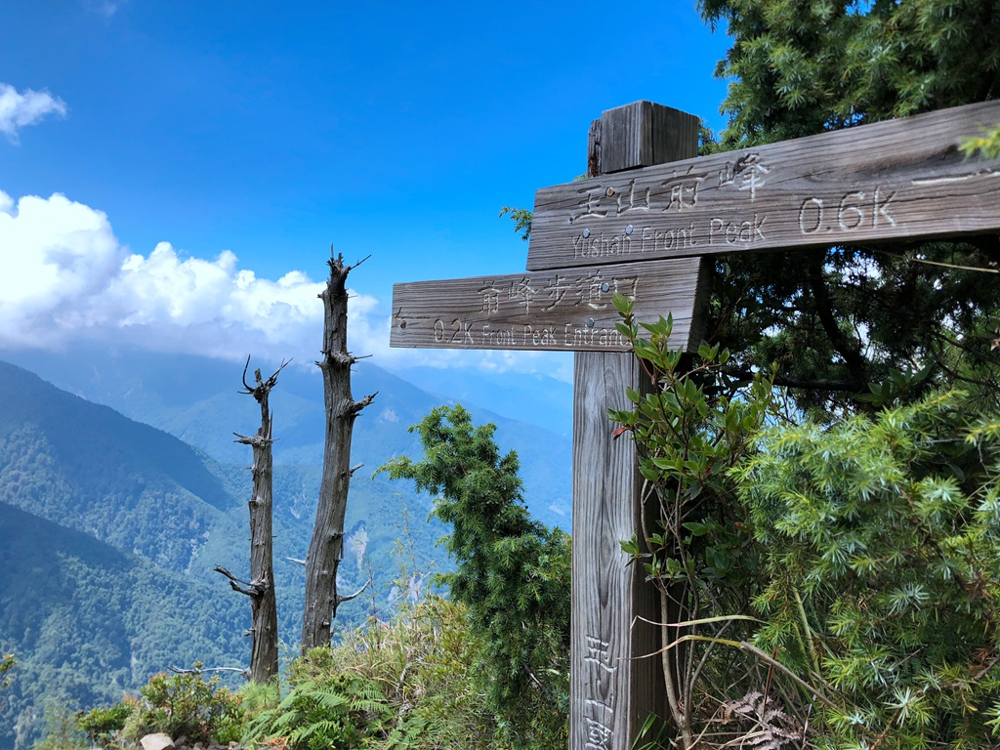

玉山前峰。 H3,239M，在台灣的百岳裡，排名第65名（依照高度順序）。 從塔塔加登山口出發，走到玉山前峰的登山口，單趟只有短短的兩公里多，沿途幾乎都只有緩上，而從前峰的登山口到達玉山前峰山頂，也僅需要走短短的８００公尺，聽起來，超簡單的！是不是？！ヾ(*´∇`)ﾉ 再從上河的時程估計圖來看，雖然只有短短的八百公尺路程，可是上山卻需要75分鐘，下山需要45分鐘呢！也就是來回差不多也要2小時啊！（我不聽我不聽！！） 這天，我們隊伍總共四個人，而其實我們計畫的行程是玉山主峰單攻，只是我之前已經單攻過主峰了，所以這天只有陪隊友走到圓峰、主峰叉路口，就一個人先下山、去單攻前峰了（當行前體訓的概念，自行加碼行程....XD）。
